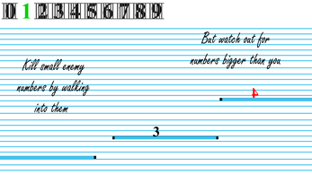

hi!
my name is ian chen. i'm a

developer
a numbers game
I made "A Numbers Game" with my roomate as part of the Chillenium 2019 Game Jam. We developed it using Unity and C#, and I focused on designing the UI and programming the movement system. It's a platformer that uses a bunch of different movement mechanics (air dashes, double jumps, and even a flappy-bird style level). Our team was originally supposed to include two more people; they would've done the art, and my roomate and I would've done the programming. However, both our artists cancelled last minute, so we had to make the game on our own. Since neither of us had any real experience with art, we designed our game around this limitation and went with the theme of numbers. This allowed us to make art assets that weren't "good" but would still look good in the context of the game. We ended up winning best UI/UX at the competition.

the void
I worked among a team of 6 to develop "The Void" for my video game design class. I was one of the two main programmers, and most of my work focused on designing the enemy AI and helping with the movement system. "The Void" was challenging for me because it's a virtual reality game, something I had never done. One of our team members had an HTC Vive, and we did most of the development and testing at his apartment. This was a lot different than anything I'd ever done before, so I had to learn to adapt quickly. Overall, this project was a really great experience which taught me a lot about working on a team and adapting to new technology.